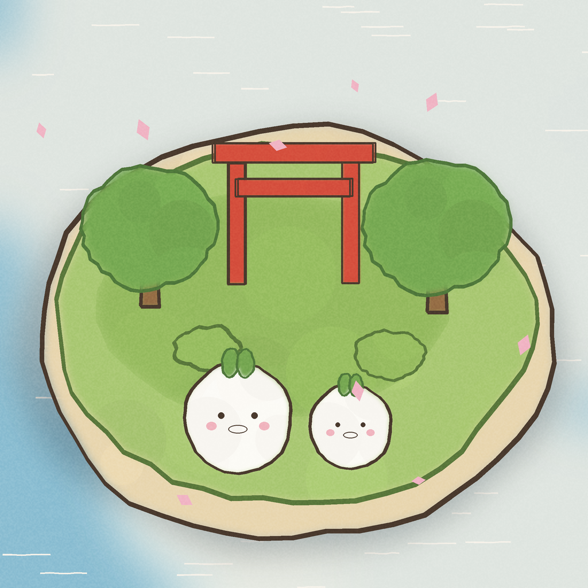

描いた島に文明が興り、戦で滅ぶ箱庭 ／ Doodle Island — Doodle a world. Empires rise.
| タイトル | おえかきの島（英語: Doodle Island／韓国語: 두들 아일랜드／中国語: 涂鸦小岛・塗鴉小島） |
|---|---|
| ジャンル | おえかき×放置観察×文明シミュレーション（箱庭） |
| プラットフォーム | iPhone（iOS 17.0以上） |
| 価格 | ¥160 買い切り（広告なし・追加課金なし・完全オフライン） |
| 対応言語 | 日本語・英語・韓国語・簡体字中国語・繁体字中国語 |
| 配信地域 | 全世界 |
| 開発 | 個人開発（Yoshitake Hirota） |
| リリース | 2026年7月（審査通過後に公開） |
| サポート | support ／ privacy |
ゆびで描いた島と生き物が、そのまま生きて動き出す箱庭シミュレーション。生き物は勝手に暮らして増え、やがて文明が興り、橋が架かり、国と国が出会う。なかよくなるか、戦うか。敗れた国は滅び、すべての出来事は「えまき」に歴史として残る。完全オフライン・広告なしの買い切り¥160。
「おえかきの島」は、ゆびで描いた絵がそのまま生きて動き出す、和風水彩の箱庭シミュレーションゲームです。 島を描き、生き物を描くと、描いた形が能力に、色が町の色になります。写真から島や生き物を作ることもできます。生き物たちはひとりでに暮らし、子を生し、世代を重ね、やがて島には文明が興ります。家が建ち、橋が架かり、となりの島と出会い——なかよくなることも、戦になることもあります。そして戦に敗れた国は、本当に滅びます。 それでも世界は続きます。誕生、おまつり、開戦、滅亡——すべての出来事は「えまき（年代記）」に刻まれ、あなただけの島の歴史になります。アプリを閉じていても世界は進み、開くたびに新しい変化が待っています。 BGM・効果音はすべてこのアプリのために作られた自作音源。通信ゼロ・広告なし・追加課金なしの買い切り¥160で、日本語・英語・韓国語・中国語（簡体字/繁体字）に対応しています。
Doodle Island is a cozy Japanese-style sandbox sim where your finger-drawn islands and creatures come to life. Creatures live and breed on their own; civilizations rise, bridges connect nations — and nations that lose wars truly fall. Every moment is written into the Chronicle. Fully offline, no ads, one-time purchase ($0.99 tier). Localized in EN/JA/KO/ZH.
クリックで原寸（1320×2868）。追加素材はお気軽にご連絡ください。
ティザー（26秒）: 描いたヘタな絵が歩き出す
メイン（36秒）: 描いた国が戦争で滅びるまで
App Preview（29秒）
Yoshitake Hirota（個人開発）
Email: hanshin1653@gmail.com
X: プレスキット掲載のスクリーンショット・動画は記事利用可（クレジット不要）。
{kind=link}
{kind=link}
{kind=link}
{kind=link}
{kind=link}
{kind=link}